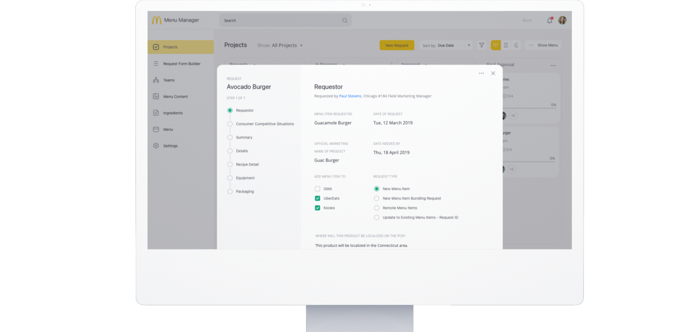
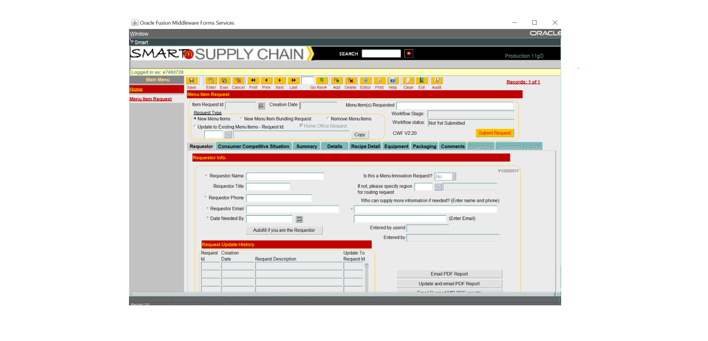
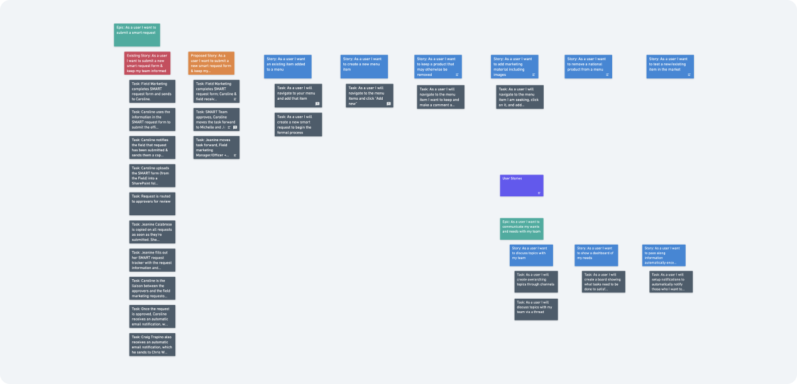
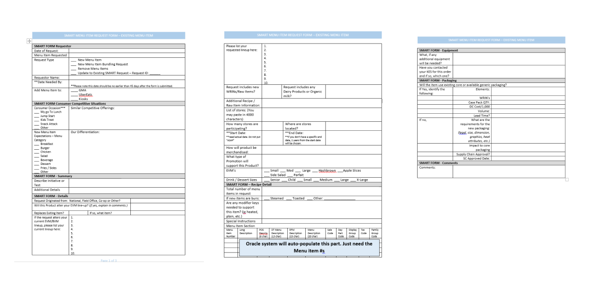
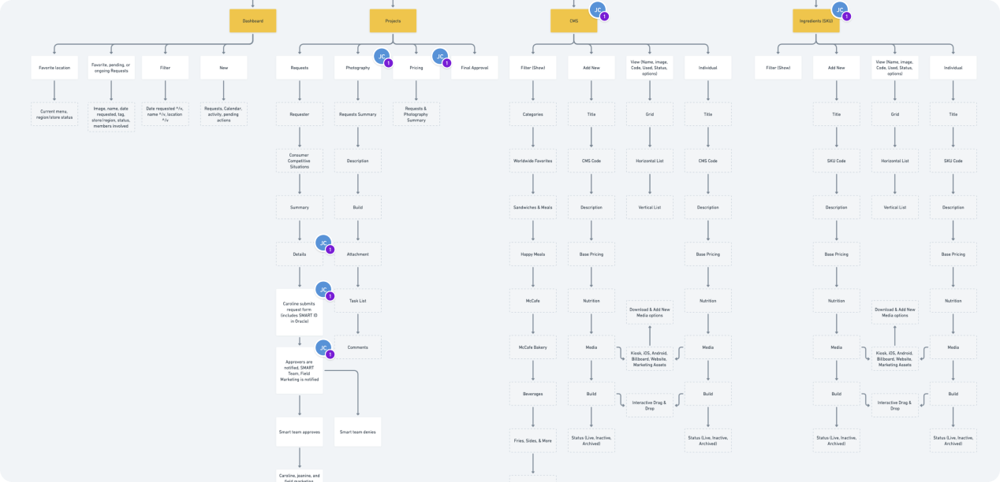
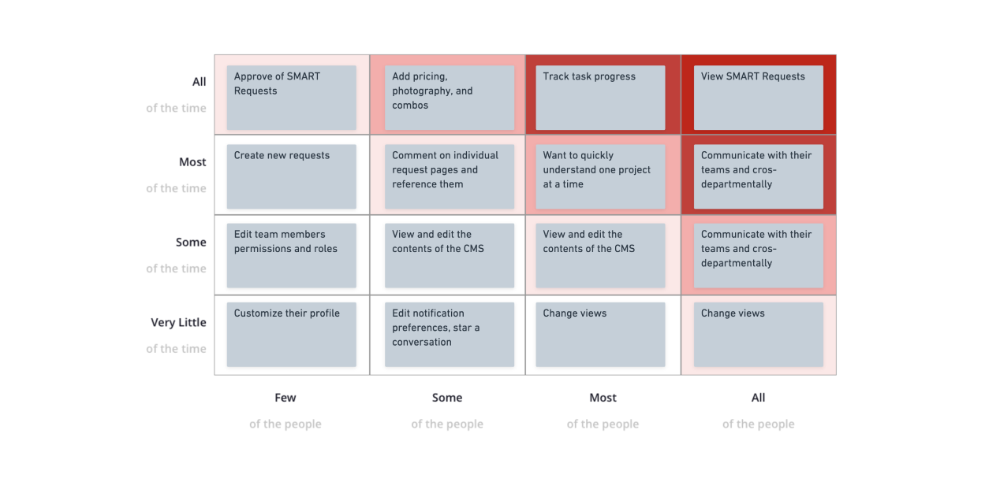
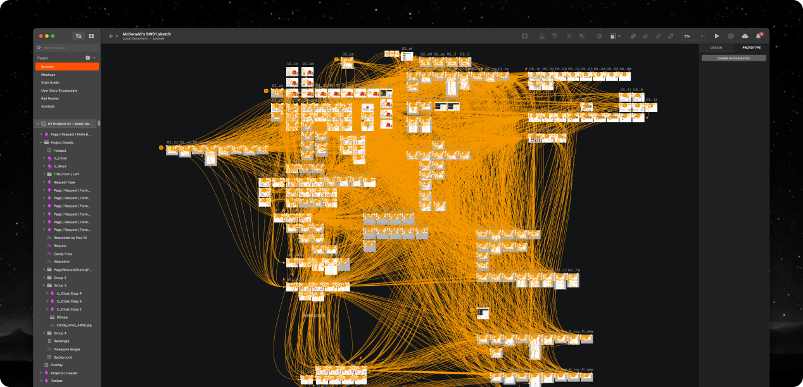

My McAdventure with McDonald's SMART Request
Spicing up McDonald's menu updates, transforming a 10-step McNightmare into a 3-step McMiracle, all on a user-friendly dashboard.
My Role
Senior UI/UX Designer
What I did
Lead a project to make it faster and easier to update global menu's through user research & Product Design.
Deliverables
- Concept
- UX Design
- UI Design
- Prototyping
Created with
McDonald’s
VisionX
VisionX
TL;DR
Overview
McDonald's faced a significant issue with slow and inefficient menu updates across its global franchises, leading to customer dissatisfaction and revenue loss. The existing process, known as the SMART Request, was a complex 10-step procedure involving multiple stakeholders.
VisionX was tasked with finding a solution to this problem. The team conducted user interviews and discovered that a single person was managing all global menu update requests via Excel sheets.
VisionX was tasked with finding a solution to this problem. The team conducted user interviews and discovered that a single person was managing all global menu update requests via Excel sheets.
Results
Summary
- A streamlined process was proposed, reducing the steps to three, all managed through an easy-to-use dashboard.
- Initial tests showed a significant reduction in SMART request time, from days to just 17 minutes.
Introduction and Problem Identification
McDonald's approached VisionX with a McProblem: their menu updates were slow, and they lacked a system for handling changes across the globe. Franchises complained about outdated regional menus, limited-time offers (LTOs) not showing up, and unhappy customers giving them grief. This was costing McDonald's big time in lost revenue (check out my Sight case study for the juicy details).
The CEO of VisionX asked me and another designer to collaborate with the McDonald's team to find a solution. Of course, we had to navigate the usual obstacles like internal politics, resistance to change, and lack of transparency.
The CEO of VisionX asked me and another designer to collaborate with the McDonald's team to find a solution. Of course, we had to navigate the usual obstacles like internal politics, resistance to change, and lack of transparency.

The old interface we uncovered during user interviews that was being used by the McDonald's team.
User Interview Quotes
During our interviews, we got a taste of McDonald's existing process, called the SMART Request. It was a complicated 10-step process involving several stakeholders and a whole lot of back-and-forth.

Research and Findings
I was shocked to discover that a single person was receiving multiple menu update requests for a global corporation with tens of thousands of locations – all via Excel sheets! It was a miracle anything got updated at all.

THIS is how the McDonald's menu's requests were submitted for over 20 years!
Proposed Solution and Design Features
So, I cooked up a plan to reduce the process to just three simple steps, all accessible through an easy-to-use dashboard:
Task 1: Field Marketing submits a SMART request form, and Dana & the field receive a notification.
Task 2: The SMART Team approves, Taylor moves the task forward to Samantha, and all parties are notified.
Task 3: Jeanine advances the task, and the Field Marketing Manager/Officer and necessary stakeholders are notified.
Task 1: Field Marketing submits a SMART request form, and Dana & the field receive a notification.
Task 2: The SMART Team approves, Taylor moves the task forward to Samantha, and all parties are notified.
Task 3: Jeanine advances the task, and the Field Marketing Manager/Officer and necessary stakeholders are notified.

Prototype Creation
I mapped out Red Routes to capture user needs, then broke down the project into Epics, Stories, and Tasks for the dev team. To expedite the process, I used an existing design system and adapted it to fit McDonald's brand and requirements.


Feedback and Validation
When we presented our solution to McDonald's international corporate leadership, they grilled us with questions and asked for clarification. However, their feedback ultimately helped refine our proposed system.
Success Metrics and Monetization Strategies
In early tests, we managed to shrink the SMART request time from days to just 17 minutes when executed correctly by the team. Talk about a McWin!
Lessons Learned and Next Steps
This project taught me the importance of perseverance when dealing with corporate challenges and the power of simplifying processes. As for next steps, we'll be keeping a close eye on our system to make further improvements and ensure McDonald's continues to serve up success.
And that, my friends, is the story of how a couple of designers helped McDonald's revamp their menu update process. So next time you're ordering a Big Mac, take a moment to appreciate the journey it took to get on that screen. Bon appétit!
And that, my friends, is the story of how a couple of designers helped McDonald's revamp their menu update process. So next time you're ordering a Big Mac, take a moment to appreciate the journey it took to get on that screen. Bon appétit!